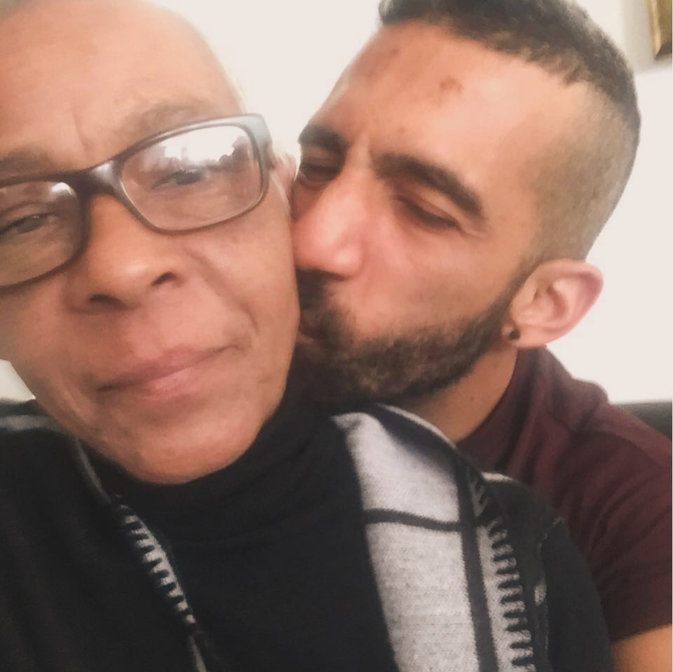

About
Tribute to My Mother - A Legacy of Love and Strength
This page is dedicated to the memory of my beloved mother, whose life, love, and unwavering support continue to shape who I am today. She was a woman of quiet resilience, deep compassion, and unshakable integrity. Her laughter could light up a room, and her wisdom grounded everyone lucky enough to know her. Through every challenge, she remained a steady source of encouragement and strength. This tribute is not only a celebration of her life but a reminder of the values she passed on—kindness, perseverance, and a fierce belief in the potential of those she loved. Her presence is deeply missed, but her legacy lives on in every step I take.
Mothers
Something about all mothers
Mothers are the foundation of who we are. They are often the first source of love, safety, and identity we experience. A mother’s influence is profound, reaching into the core of our character, our confidence, and our resilience. Whether through gentle guidance, quiet sacrifices, or fierce protection, mothers teach us what it means to care and be cared for. They offer a unique kind of unconditional support that is hard to replicate in any other relationship.
At their best, mothers are architects of possibility, instilling in their children the belief that they are capable of great things. Even when life demands more from them than seems fair, they continue to nurture, to heal, to encourage. Their strength often goes unnoticed because it is so deeply woven into the fabric of daily life. Yet, without it, so much of what we accomplish would never be possible.
Mothers are not perfect, and they are not superhuman. Their beauty lies in their humanity—the mistakes they make, the lessons they learn alongside us, and the love they give anyway. They shape generations through small, often invisible acts of devotion. A word of encouragement at the right time, a listening ear, a simple act of kindness—these moments echo long after childhood ends.
In honoring mothers, we acknowledge more than personal gratitude; we recognize the vital role they play in communities, cultures, and societies. They are often the quiet leaders behind visible successes, the unsung heroes behind everyday acts of courage.
This page stands as a testament not just to one extraordinary woman, but to the countless mothers who build worlds with their hands, hearts, and hope. Their legacy is not measured in grand gestures, but in the countless lives made fuller, kinder, and stronger because of their love.
Contact
This is actually the first webpage I have ever seen through completion. I usually get frustrated and I give up. Since I became a Supporter of the non-profit behind the treasure of knowledge called Freecodecamp, I have seen progress. As simple as it may this be, I can at least start saying that I am building a portfolio. If you have never visited Freecodecamp, you have been living under a rock, just like me. I would highly suggest you give them a a look at FreeCodeCamp
You can also check my progress and join me at nicolascl86
You can join me on Github: nicolascl86
I welcome any comments and suggestions you may have. Don't be too hursh though ok? Hehe. Contact me at: Nicolas Trittas